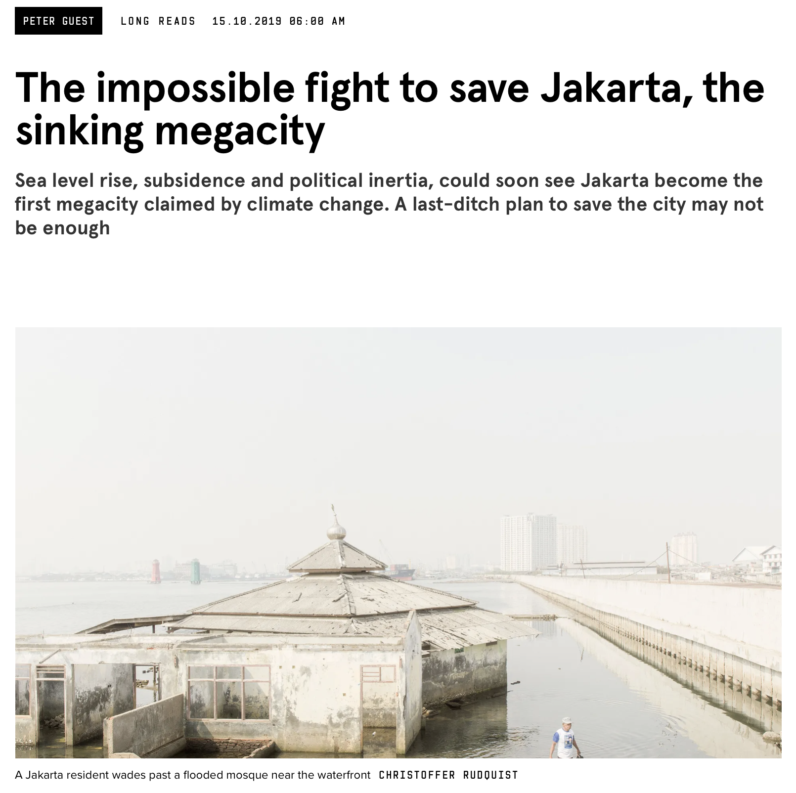

4 Policy Application
4.1 Summary
 Source: Wired UK Nast (n.d.)
As the sea level rise and groundwater extraction increasing, the future of coastal cities are in danger.
Let’s take a look in Jakarta Metropolitan City, the capital city of Indonesia. Quick facts about Jakarta:
- Population (estimate): 10,562,088
- Area: 664.01 km2
- Geographical situation: Coastal city in the south of Java Sea
- Risk: Flood, earthquake, land subsidence
Jakarta is sinking in 2030! due to the global sea level rise and groundwater extraction.
Current policy
Mari Simak Peraturan Larangan Penggunaan Air Tanah di DKI Jakarta
Groundwater, key to the Sustainable Development Goals (SDGs)
Indonesian government set the restriction of groundwater extraction by different fees , will it work?
The problem is, the Jakarta’s government only restricted CBD area around Sudirman and the policy about extraction restriction is like this:
- Extraction restriction only applied in the designated area (around Sudirman CBD), Central Jakarta.
- The restriction only applied for the above 5 stories building.
- The restriction is constrain only by the price of groundwater extraction.
- Building owner have to put groundwater tools monitoring in their building.
I am focusing on groundwater extraction and the number 1 issue which is the planned area of restriction only applied in the Central Jakarta without consideration of data.
So, I set the research question: How is data-driven approach (using remote sensing) can help optimise the solution for Jakarta’s land subsidence issue? The solution is in the application below
4.2 Applications
Using remote sensing to model and predict the land subsidence is useful to decide which area should be restricted to groundwater extraction in Jakarta.
According to Azarakhsh, Azadbakht, and Matkan (2022) reserach paper, they use below data to model and predict land subsidence: - InSAR Sentinel-1
- In this study, a total number of 193 Sentinel-1A images acquired between October 8, 2014 and March 28, 2019 were used.
- Additionally, they used the Shuttle Radar Topography Mission (SRTM) Digital Elevation Model (DEM) for preliminary geocoding and removing the topographic phase component.
In the former category, water flow and soil mechanics have been modeled through simulating the process of LS in aquifer systems according to groundwater abstraction and geological, geotechnical and hydrogeological conditions (Fernandez et al., 2018; Bajni et al., 2019; Zhu et al., 2020). In such methods, it is necessary to access accurate hydrogeological data and adopt various assumptions (Ilia et al., 2018).
Several studies have also applied Persistent Scatterer Interferometry (PSI) techniques and statistical-empirical methods such as back propagation neural networks (BPNs) (Dehghani et al., 2013), long short-term memory (LSTM) (Li et al., 2020), geographically weighted LSTM (GW-LSTM) (Li et al., 2021), Random forest (RF) (Ilia et al., 2018), analytical hierarchy process coupled with sensitivity analysis (AHP-SA) (Zhu et al., 2013), and GIS based spatial analysis (Zhu et al., 2015) to model and predict LS.
The geological and hydrological parameters considered for LS modeling using the ML methods include groundwater level change, aquifer media, precipitation rate, slope, land use, depth to water table, distance from exploiting wells, distance from rivers, and distance from faults.
All these layers were converted to raster, and their values were extracted to PS points detected by PS-InSAR analysis as sample points. The effects of these parameters on LS were investigated and the most important parameters were determined.
In this paper, Azarakhsh, Azadbakht, and Matkan (2022) applied the PS-InSAR technique proposed by Ferretti et al. (2001) to monitor LS at millimeter precision (Perissin, 2016) over the study period. This technique is based on detection of points (or targets) called the permanent scatterers (PS) that remain unchanged over the entire period. For PS-InSAR analysis, single look complex (SLC) images of the same area were co-registered to a single master configuration preferably selected from the middle of the spatial and temporal baseline spaces (Hanssen, 2001). Interferograms were then generated from multi-temporal SAR images. Finally, the orbital data and the external SRTM DEM were used to remove the Earth curvature influence and the topographic component of the interferometric phase, respectively.
In conclusion, this study combine: PS-InSAR (mm precision), ANN, and RF to model the landsubsidence.
Limitations and works
To validate the estimated LS measurements, it is necessary that the vertical displacement is compared with the GPS measurements.
Accuracy
Future: using NISAR data (NASA-ISRO SAR EO satellite launch in 2024) with 2 bands (L-band and S-band)
4.3 Personal Reflection
As serious as it is, the government works slowly and tend to abandon the fact that Jakarta is sinking. Instead, they move the nation’s capital into Nusantara, Kalimantan island. This issue made me realise the importance of data and study before deciding a policy. It looks makes sense at first when they assigned the area of restriction in the Central Jakarta, because it is the most densed area in Jakarta. However, looking at North Jakarta that are already sinking (some areas) and given Jakarta’s geography, the decision of this policy must take land subsidence data and modeling into account. Furthermore, if such study has conducted, we can predict the future of Jakarta city. Hopefully the government can work faster and make data-driven policy.